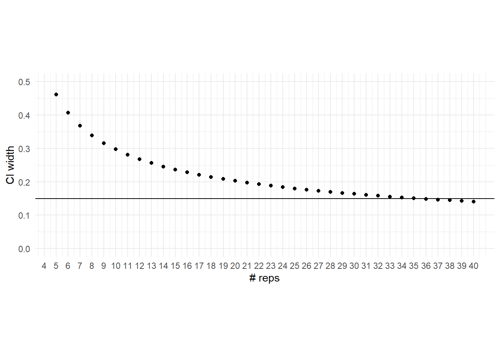
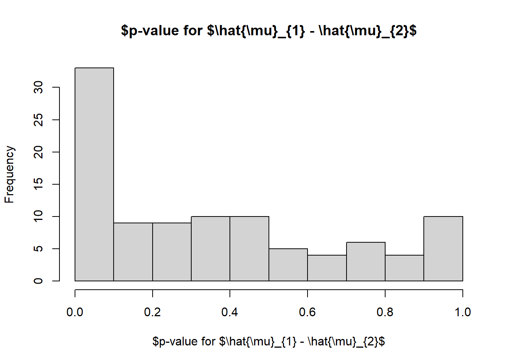
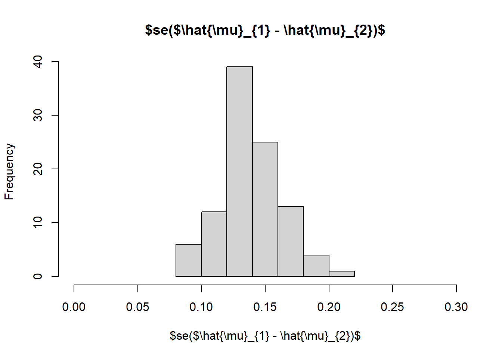
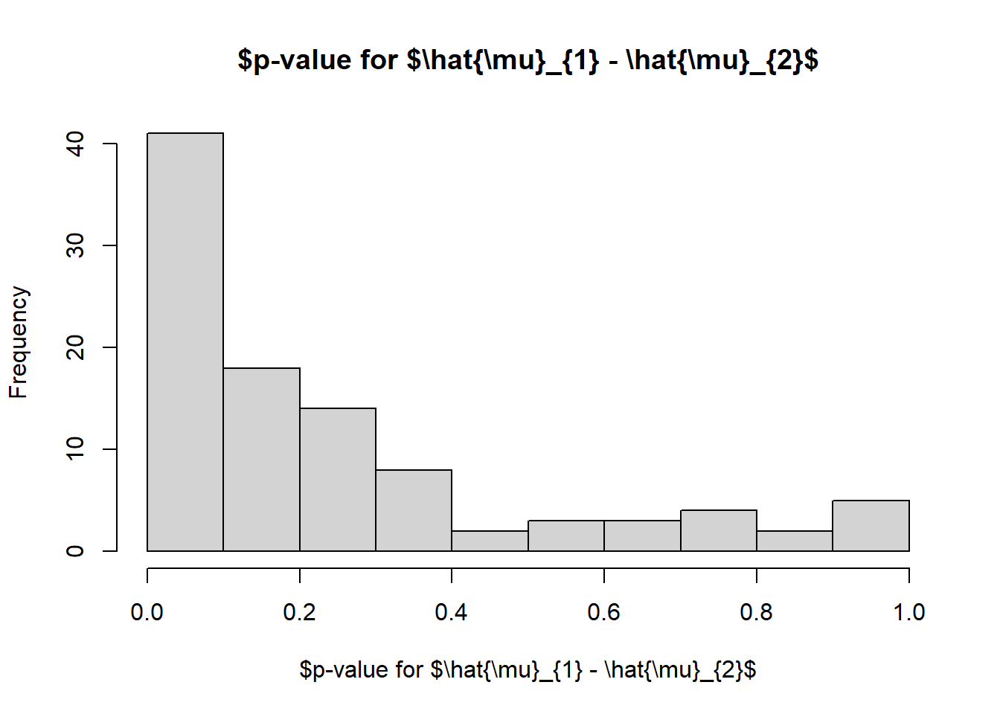
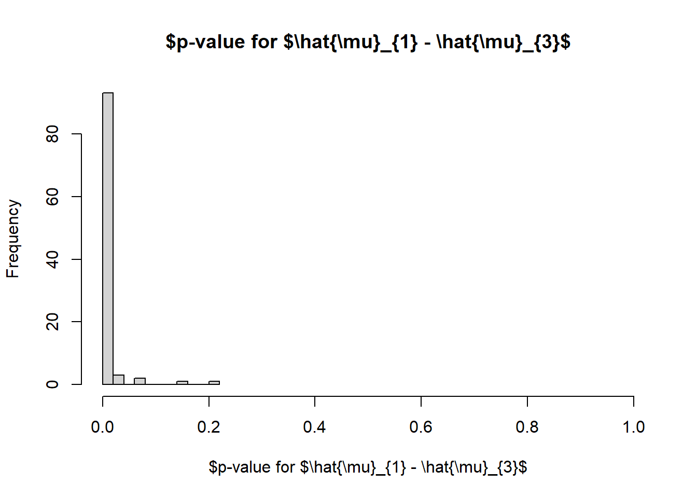
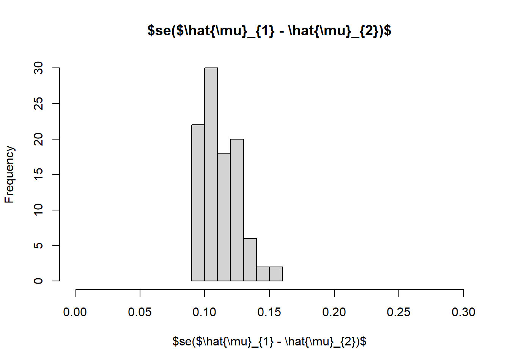

Day 20 Planning an experiment II
July 2nd, 2026
20.1 Announcements
- Tomorrow is an observed holiday
- HW 3 is due on Tuesday
- Projects are due July 12th.
20.2 Planning an experiment
20.2.1 Research question
What is the best recipe to prepare banana muffins?
- A: Baking soda only
- B: Baking soda + baking powder
- C: Baking powder only
What if it was a different combination?
20.2.2 Experiment design
What we know:
- \(\sigma^2_\varepsilon \approx 0.1\)
Analytic approach:
reps <- 5:40
sigma2_e <- .1
alpha <- .05
t_value <- qt(1-alpha/2, df = (reps-1)*2)
se_thetahat <- sqrt(2*sigma2_e / reps)
data.frame(reps,
CI_width = t_value*se_thetahat) |>
ggplot(aes(reps, CI_width))+
geom_point()+
coord_cartesian(ylim = c(0, .5))+
scale_x_continuous(breaks = 1:40)+
geom_hline(yintercept = .15)+
labs(x = "# reps", y = "CI width")+
theme_minimal()+
theme(aspect.ratio = .4)
Simulation-based approach:
Consider these competing designs:
- RCBD with 10 reps with its corresponding statistical model, \(y_{ij} = \mu + T_i + o_j + \varepsilon_{ij}\)
- RCBD with 10 reps and subsampling with its corresponding statistical model, \(y_{ij} = \mu + T_i + o_j + s_{i(j)} + \varepsilon_{ij}, s_{i(j)} \sim N(0, \sigma^2_o)\)
All examples below generate 100 designs with the means described above.
20.2.3 RCBD with 10 reps
The data generating model is literally \(y_{ij} = \mu + T_i + o_j + \varepsilon_{ij}\), with \(o_j \sim N(0, 0.05)\) and \(\varepsilon_{ij} \sim N(0, 0.1)\).
n_reps <- 10
df_rcbd <- expand.grid(recipe = c("A", "B", "C"),
rep = 1:n_reps)
df_rcbd$rep_f <- as.factor(df_rcbd$rep)
df_rcbd <- df_rcbd %>%
mutate(mu = case_when(recipe == "A" ~ 0,
recipe == "B" ~ .15,
recipe == "C" ~ .5))
sigma_epsilon <- sqrt(.1)
sigma_rep <- sqrt(.05)
n_sims <- 100
p_mu1_minus_mu2 <- numeric(n_sims)
p_mu1_minus_mu3 <- numeric(n_sims)
se_mu1_minus_mu2 <- numeric(n_sims)
se_mu1_minus_mu3 <- numeric(n_sims)
n <- nrow(df_rcbd)set.seed(42)
for (i in 1:n_sims){
oven_eff <- rnorm(n_reps, 0, sigma_rep)
df_temp <- df_rcbd |> mutate(y = mu + oven_eff[rep] + rnorm(n, 0, sigma_epsilon))
m <- lm(y ~ recipe + rep_f, data = df_temp)
means.temp <- as.data.frame(emmeans(m, ~recipe, contr = list(c(1, -1, 0),
c(1, 0, -1)))$contrasts)
p_mu1_minus_mu2[i] <- means.temp$p.value[1]
p_mu1_minus_mu3[i] <- means.temp$p.value[2]
se_mu1_minus_mu2[i] <- means.temp$SE[1]
se_mu1_minus_mu3[i] <- means.temp$SE[2]}hist(p_mu1_minus_mu2,
xlim = c(0, 1),
xlab = TeX("p-value for $\\hat{\\mu}_{1} - \\hat{\\mu}_{2}$"),
main = TeX("p-value for $\\hat{\\mu}_{1} - \\hat{\\mu}_{2}$"))
hist(p_mu1_minus_mu3,
xlim = c(0, 1),
xlab = TeX("p-value for $\\hat{\\mu}_{1} - \\hat{\\mu}_{3}$"),
main = TeX("p-value for $\\hat{\\mu}_{1} - \\hat{\\mu}_{3}$"))
hist(se_mu1_minus_mu2,
xlim = c(0, .3),
xlab = TeX("se($\\hat{\\mu}_{1} - \\hat{\\mu}_{2})$"),
main = TeX("se($\\hat{\\mu}_{1} - \\hat{\\mu}_{2})$"))
hist(se_mu1_minus_mu3,
xlim = c(0, .3),
xlab = TeX("se($\\hat{\\mu}_{1} - \\hat{\\mu}_{3})$"),
main = TeX("se($\\hat{\\mu}_{1} - \\hat{\\mu}_{3})$"))## [1] 0.24## [1] 0.88## [1] 0.139180220.2.4 RCBD with 10 reps and 6 subsamples
Here, the data generating model is literally \(y_{ijk} = \mu + T_i + o_j + s_{i(j)} + \varepsilon_{ijk}\), with \(o_j \sim N(0, 0.05)\), \(s_{i(j)} \sim N(0, 0.01)\) and \(\varepsilon_{ijk} \sim N(0, 0.1)\).
n_reps <- 10
n_subsamps <- 6
df_rcbd <- expand.grid(recipe = c("A", "B", "C"),
rep = 1:n_reps,
subsamp = 1:n_subsamps)
df_rcbd <- df_rcbd %>%
mutate(mu = case_when(recipe == "A" ~ 0,
recipe == "B" ~ .15,
recipe == "C" ~ .5),
rep_f = as.factor(rep),
ss = as.numeric(as.factor(paste(rep, recipe))))
sigma_epsilon <- sqrt(.3)
sigma_ss <- sqrt(.01)
sigma_rep <- sqrt(.05)
n_sims <- 100
p_mu1_minus_mu2 <- numeric(n_sims)
p_mu1_minus_mu3 <- numeric(n_sims)
se_mu1_minus_mu2 <- numeric(n_sims)
se_mu1_minus_mu3 <- numeric(n_sims)
n <- nrow(df_rcbd)set.seed(42)
for (i in 1:n_sims){
oven_eff <- rnorm(n_reps, 0, sigma_rep)
ss_eff <- rnorm(n_reps*n_subsamps, 0, sigma_ss)
df_temp <- df_rcbd |>
mutate(y = mu + oven_eff[rep] + ss_eff[ss] + rnorm(n, 0, sigma_epsilon))
m <- lmer(y ~ recipe + (1|rep/recipe), data = df_temp)
means.temp <- as.data.frame(emmeans(m, ~recipe,
contr = list(c(1, -1, 0),
c(1, 0, -1)))$contrasts)
p_mu1_minus_mu2[i] <- means.temp$p.value[1]
p_mu1_minus_mu3[i] <- means.temp$p.value[2]
se_mu1_minus_mu2[i] <- means.temp$SE[1]
se_mu1_minus_mu3[i] <- means.temp$SE[2]
}hist(p_mu1_minus_mu2,
xlim = c(0, 1),
xlab = TeX("p-value for $\\hat{\\mu}_{1} - \\hat{\\mu}_{2}$"),
main = TeX("p-value for $\\hat{\\mu}_{1} - \\hat{\\mu}_{2}$"))
hist(p_mu1_minus_mu3,
xlim = c(0, 1),
xlab = TeX("p-value for $\\hat{\\mu}_{1} - \\hat{\\mu}_{3}$"),
main = TeX("p-value for $\\hat{\\mu}_{1} - \\hat{\\mu}_{3}$"))
hist(se_mu1_minus_mu2,
xlim = c(0, .3),
xlab = TeX("se($\\hat{\\mu}_{1} - \\hat{\\mu}_{2})$"),
main = TeX("se($\\hat{\\mu}_{1} - \\hat{\\mu}_{2})$"))
## [1] 0.29## [1] 0.96## [1] 0.112840620.3 Take-home messages
- Two approaches to planning experiments and evaluating hypotheticals.
- For a more complex example, check out this example comparing RCBD and two different types of split-plot designs.
- Read: Casler, M.D. (2015), Fundamentals of Experimental Design: Guidelines for Designing Successful Experiments. Agronomy Journal, 107: 692-705. https://doi.org/10.2134/agronj2013.0114